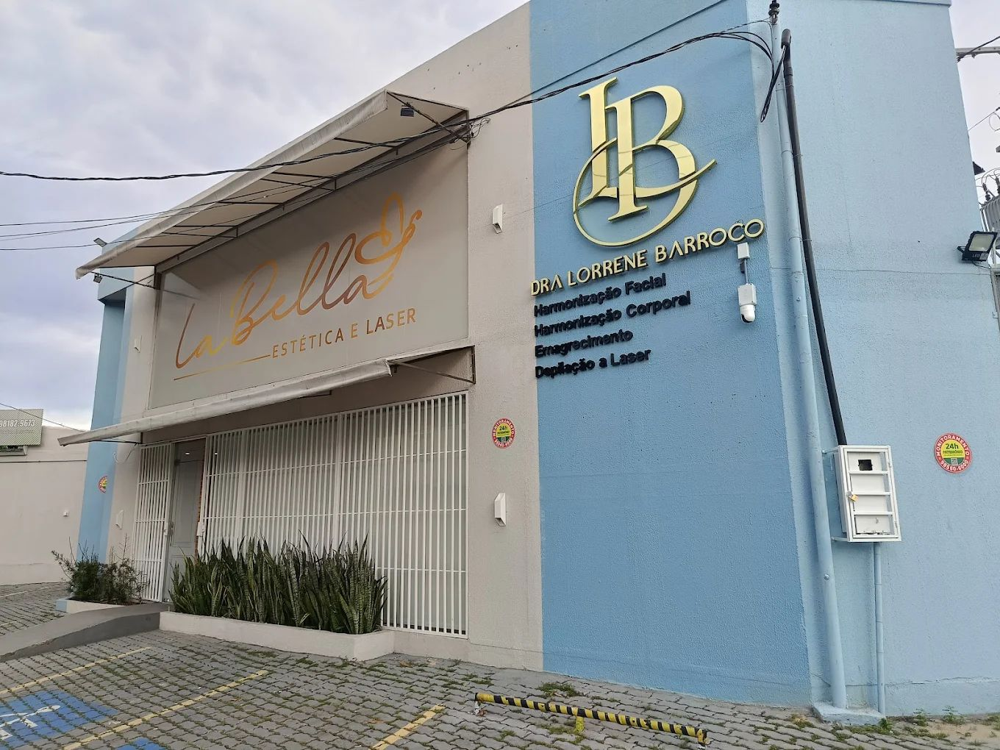
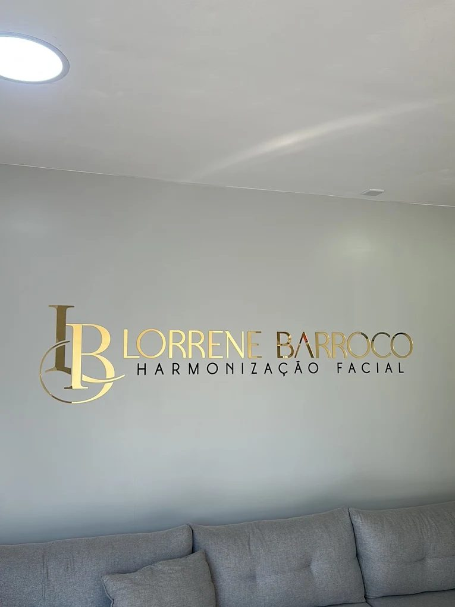

Harmonização facial com naturalidade · Parque 10, Manaus
Sua beleza em mãos especializadas
Face, corpo e emagrecimento com a Dra. Lorrene Barroco, para mulheres que querem envelhecer bem. Aqui nada começa pela agulha: começa por uma conversa e uma avaliação.
- Seg a sex 9h–18h · sáb 9h–13h
- 5,0 no Google · 129 avaliações

O que você quer cuidar?
Escolha por onde começar. Em cada procedimento tem um botão que já abre o WhatsApp com a mensagem pronta.
-
Face
Harmonização facial
Procedimentos para equilibrar os traços do rosto, planejados depois da avaliação e com foco em naturalidade.
Perguntar sobre harmonização facial -
Face
Rinomodelação
Ajuste do contorno do nariz sem cirurgia, feito no consultório e indicado depois da avaliação.
Perguntar sobre rinomodelação -
Face
Lábios
Procedimentos para os lábios, pensados para o formato do seu rosto e sem exagero.
Perguntar sobre lábios -
Face
Fios de PDO
Fios absorvíveis aplicados na pele do rosto, indicados de acordo com o que a avaliação mostrar.
Perguntar sobre fios de PDO -
Face
Skinbooster facial
Aplicação que hidrata a pele do rosto por dentro. Quando indicado, a Dra. Lorrene usa cânula, para a aplicação ser mais confortável.
Perguntar sobre skinbooster -
Corpo
Harmonização corporal
Tratamentos para regiões do corpo, escolhidos de acordo com o seu objetivo e com o que a avaliação mostrar.
Perguntar sobre harmonização corporal -
Corpo
Depilação a laser
Sessões de depilação a laser, com avaliação da pele antes da primeira sessão.
Perguntar sobre depilação a laser -
Emagrecimento
Emagrecimento
Para quem busca reduzir medidas com acompanhamento. O plano é montado depois da avaliação, para o seu caso.
Perguntar sobre emagrecimento -
A confirmar
Outros procedimentos
Os demais procedimentos da clínica entram aqui, com os nomes que a Dra. Lorrene usa no Instagram.
Perguntar sobre outro procedimento
Como funciona o seu tratamento
Do primeiro “oi” no WhatsApp até o retorno. Você sabe o que vai acontecer em cada etapa.
-
1
Avaliação
Você conta o que te incomoda e o que espera. A Dra. Lorrene avalia sua pele, rosto ou corpo antes de indicar qualquer coisa.
-
2
Plano personalizado
Você sai sabendo o que faz sentido para o seu caso, como é cada etapa e como se preparar. Sem pacote pronto.
-
3
Procedimento
Tudo é explicado antes de começar. A clínica usa técnicas que reduzem o desconforto, como a cânula, quando indicada.
-
4
Acompanhamento
Depois, você recebe as orientações de cuidado em casa e a Dra. acompanha como a sua pele está respondendo.
Medo de agulha? A gente entende.
Muita gente chega na La Bella com receio de sentir dor. Por isso a clínica explica cada passo com calma e, quando é possível, escolhe a técnica mais confortável para você.
Tirar dúvidas antes de agendar
A clínica da Dra. Lorrene Barroco
A La Bella fica no Parque Dez e leva o nome e a assinatura da Dra. Lorrene: o LB dourado que você vê na fachada e na recepção. O espaço é moderno e pensado para você se sentir à vontade desde a chegada.
Tem paciente que acompanha a clínica há anos. O que faz voltar é o jeito de atender: ouvir primeiro, avaliar com cuidado e indicar só o que faz sentido.
Dra. Lorrene Barroco
Formação e registro profissional: a confirmar
Horários
Seg a sex 9h–18h · sáb 9h–13h
| Segunda | 9h às 18h |
|---|---|
| Terça | 9h às 18h |
| Quarta | 9h às 18h |
| Quinta | 9h às 18h |
| Sexta | 9h às 18h |
| Sábado | 9h às 13h |
| Domingo | Fechado |
Como chegar
Av. Gabriel Corrêa Pedrosa, 387 AParque Dez, Manaus - AM
CEP 69055-011
Procure o prédio com a parede azul e o LB dourado. Tem vagas na frente da clínica.
Perguntas frequentes
Onde fica a Clínica La Bella Estética?
A Clínica La Bella Estética fica na Av. Gabriel Corrêa Pedrosa, 387 A, no Parque Dez, em Manaus. É o prédio com a parede azul e o monograma LB dourado na fachada.
Qual o horário da La Bella Estética? Abre sábado?
A La Bella Estética abre de segunda a sexta, das 9h às 18h, e no sábado, das 9h às 13h. Domingo fica fechada.
Como agendar uma avaliação na La Bella Estética?
O agendamento é feito pelo WhatsApp da clínica, (92) 98182-2850. Você diz o que quer tratar e a equipe marca o melhor horário para a sua avaliação.
A La Bella Estética faz avaliação antes do procedimento?
Sim. Na La Bella todo tratamento começa por uma avaliação com a Dra. Lorrene Barroco. É nela que se define o que faz sentido para o seu caso.
Quais procedimentos a La Bella Estética faz?
A La Bella Estética trabalha com harmonização facial, rinomodelação, lábios, fios de PDO, skinbooster facial, harmonização corporal, emagrecimento e depilação a laser. Para outros procedimentos, pergunte pelo WhatsApp.
O skinbooster na La Bella Estética dói?
Quando indicado, a Dra. Lorrene faz o skinbooster com cânula, o que costuma deixar a aplicação mais confortável. A sensação muda de pessoa para pessoa, e na avaliação ela explica como vai ser no seu caso.
Quanto custa um procedimento na La Bella Estética?
O valor depende do que for indicado na avaliação, por isso a La Bella não trabalha com preço fechado no site. Fale com a clínica pelo WhatsApp para tirar dúvidas.
Quem atende na La Bella Estética?
Os atendimentos são da Dra. Lorrene Barroco e da equipe da clínica.
O primeiro passo é uma conversa
Mande uma mensagem dizendo o que você quer cuidar. A equipe responde e marca a sua avaliação.
Chamar no WhatsApp